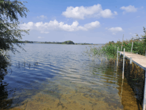
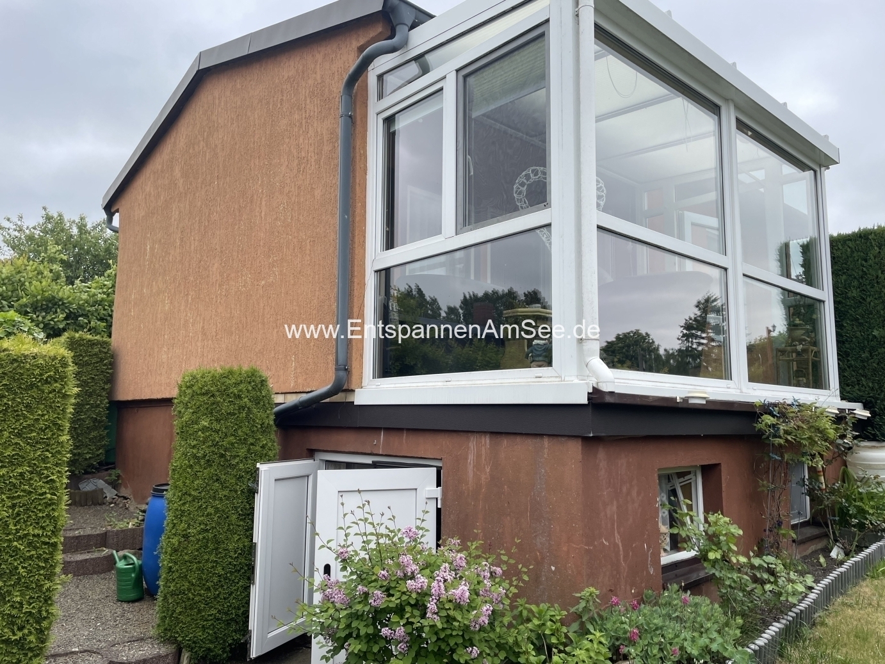
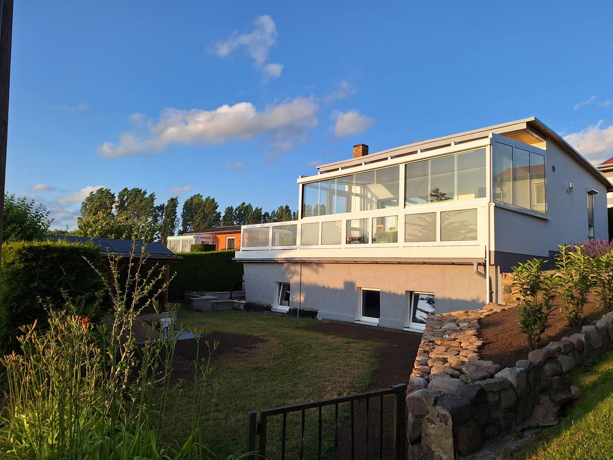

Ferien im Hügelland in Fürstenwerder – in der malerischen Uckermark, nur 1,5 Stunden von Berlin entfernt. Genießt eine Auszeit inmitten unberührter Natur.
In unseren Ferienhäusern findet ihr die perfekte Kombination aus Entspannung und Erlebnis.

Nur 2 Gehminuten entfernt – ideal zum Schwimmen und zum Einsetzen von Boot, SUP oder Surfbrett. Badeschuhe empfohlen.

7 Minuten entfernt an der historischen Stadtmauer: Sandstrand, Beachvolleyball, Klettergerüst und Liegewiese unter alten Kastanien.

Ausgedehnte Touren durch Alleen, weite Landschaften und kleine Dörfer. Entdeckt Hofläden mit regionalen Köstlichkeiten.
Zwei gemütliche Rückzugsorte direkt am Großen See – perfekt für Paare, Familien und kleine Gruppen.

Gemütlich & einladend für bis zu 4 Personen
VICKY ist ein liebevoll eingerichtetes Ferienhaus mit Wintergarten, Hollywoodschaukel und Grillplatz. Haustiere sind herzlich willkommen – perfekt für einen entspannten Familienurlaub.

Modern & stilvoll – ab diesem Sommer 2026 für euch da
HELENE wurde liebevoll renoviert und ist seit Sommer 2026 eröffnet. Freut euch auf ein ebenso gemütliches Zuhause auf Zeit – mit eigenem Charme und modernem Komfort.
In Fürstenwerder und Umgebung findet ihr alles, was ihr für einen schönen Urlaub braucht.
Pure Landlust, Knaufi's Eiskaffee, Else Förster, Ihlenfeldt's Backstube – direkt im Ort.
Supermärkte in Woldegk (10 km) und Prenzlau (24 km) mit allem, was das Herz begehrt.
Schwimmen, Radfahren, Wandern, historische Kirchen und die einzigartige Feldstein-Architektur.